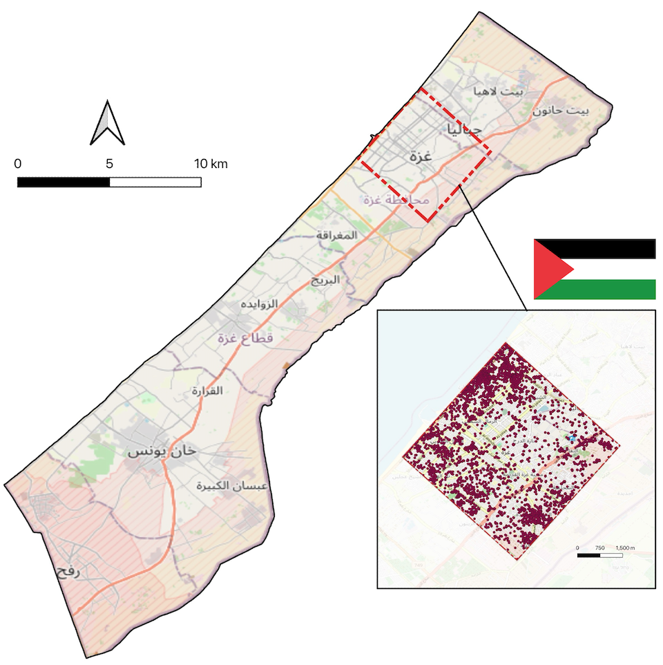
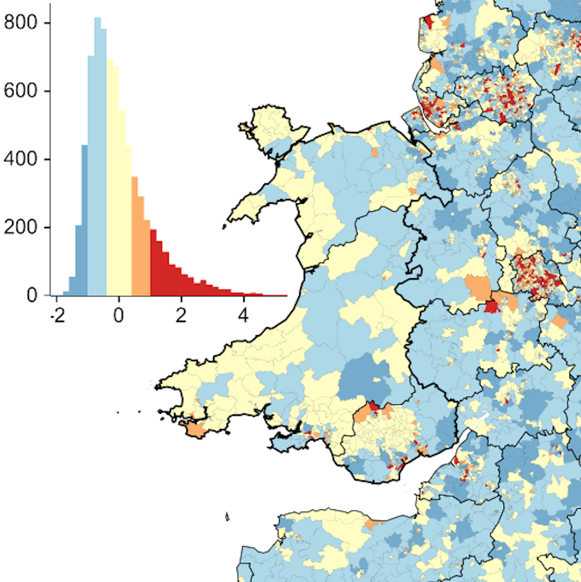
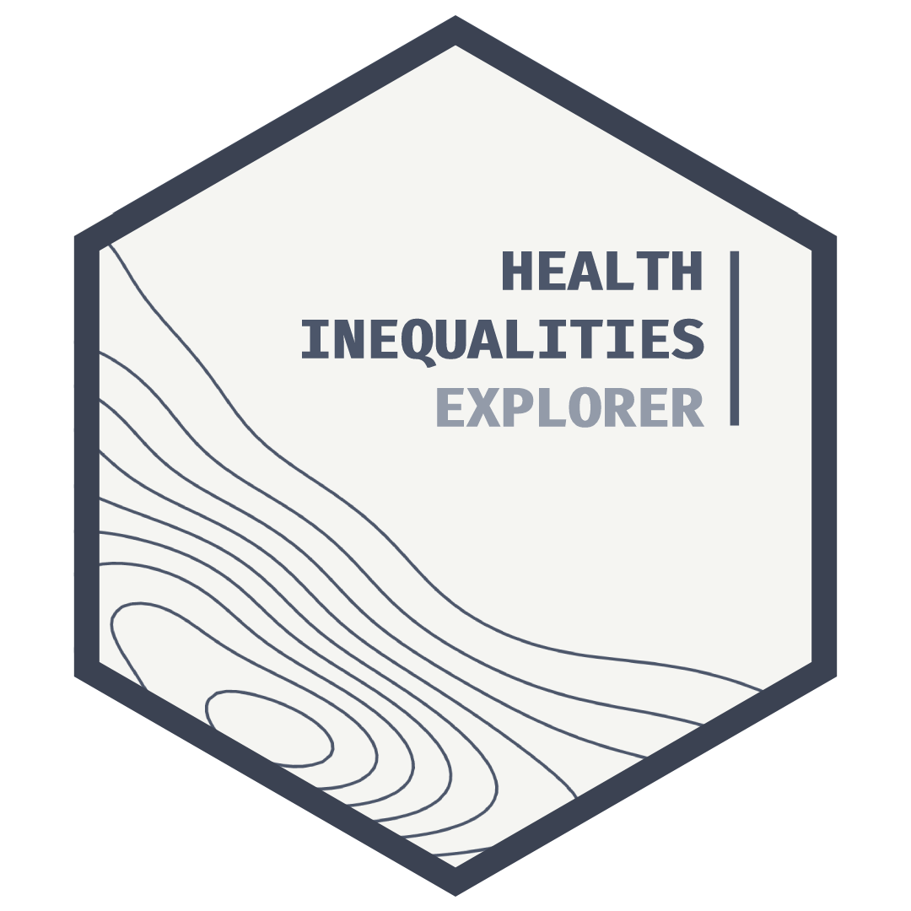
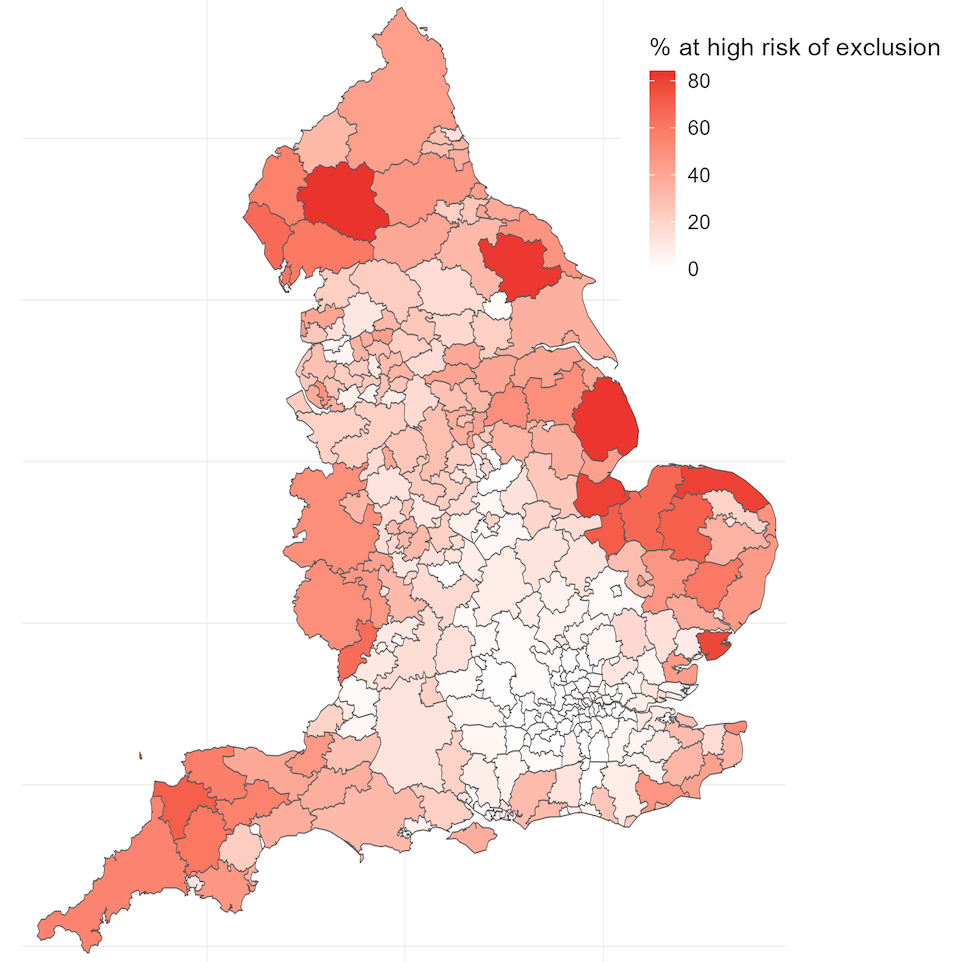
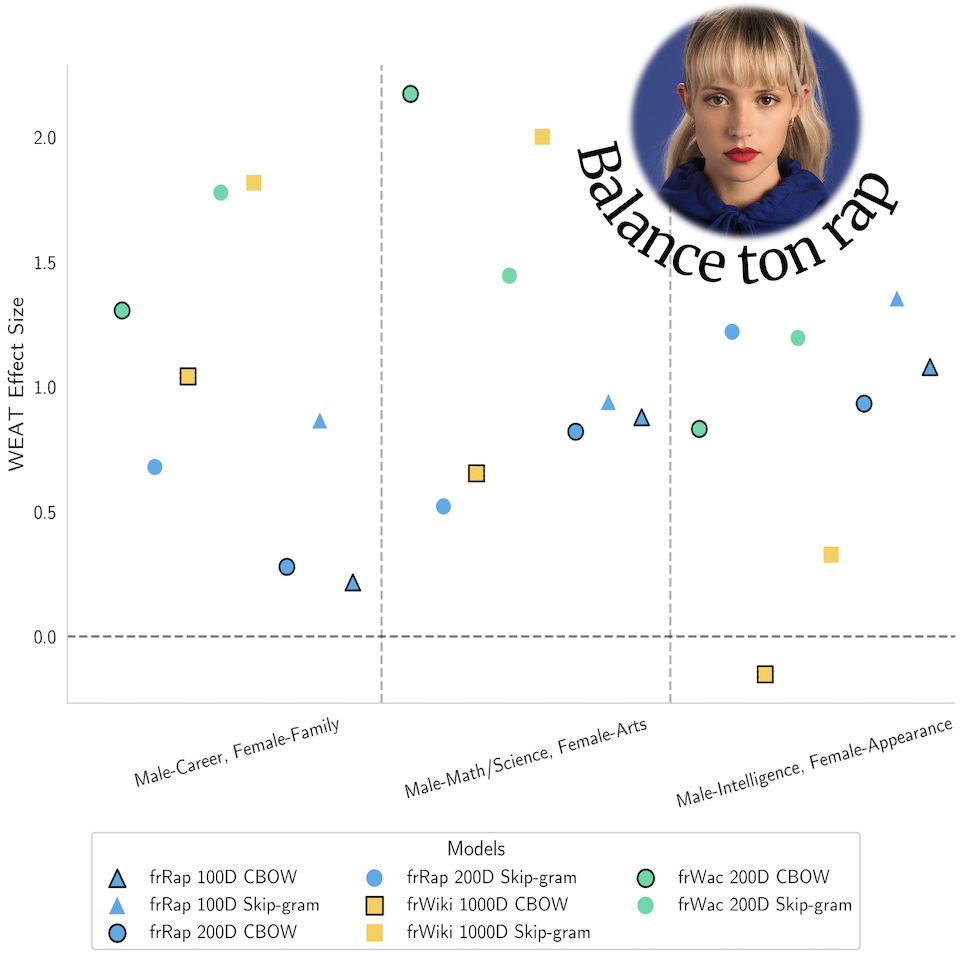
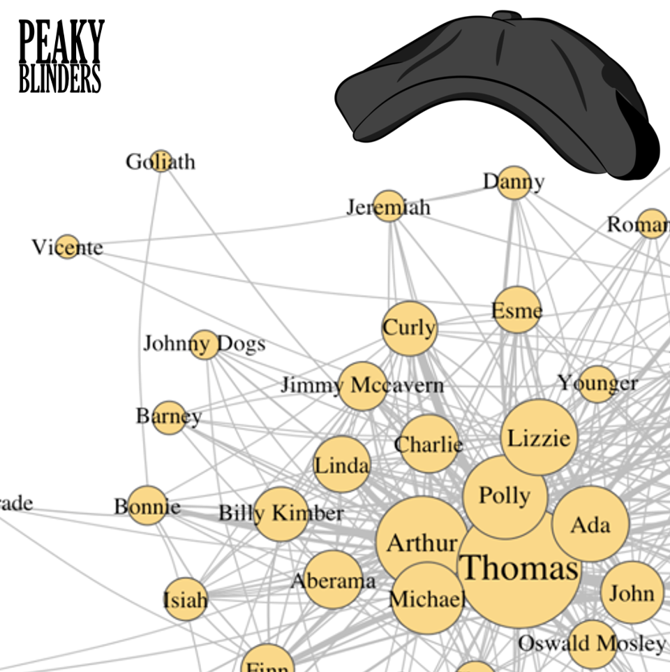

Mattéo Larrodé
Data Analyst @ the Zambia Evidence Lab
MSc Social Data Science @ the University of Oxford
I aim to use data science for social good. I'm especially drawn to how machine learning and AI can strengthen humanitarian decision-making, and improve the lives of vulnerable people.
So far, I have built data tools for the British Red Cross and Zambian government agencies, and used satellite imagery to track building destruction in Gaza. I want to take this further, towards the questions humanitarian organisations face: where displaced people are and what they need, how to develop robust early warning systems and limit the impact of disasters when they hit, and how to document human rights abuses.
OSINT, investigative data journalism and innovative data storytelling are angles through which I approach these questions. I draw a lot of inspiration from organisations at the cutting edge of these fields: Forensic Architecture, Lighthouse Reports and the Human Rights Data Analysis Group are some of them.
Research & Open-source
As a strong open-source enthusiast, I make my research, and personal projects as transparent and reproducible as possible. Here is a little selection!

Wildfire Risk and Social Vulnerability
The wildfires R package couples wildfire risk (modelled via random forest) with social vulnerability in the UK. Paper under review in the International Journal of Disaster Risk Reduction.


DEPAHRI
An index of how hard it is to physically and digitally access healthcare in England, Wales and Scotland. Source code and data in the DEPAHRI R package.


A Peaky Blinders Network Analysis
An introductory network analysis of the Peaky Blinders TV show, using web-scraped transcripts of all 36 episodes.
Experience
See CV-
2026
International Growth Centre, Zambia Evidence Lab Data Analyst / Scientist
Embedded in Zambia's Ministry of Finance, I built AI-assisted survey classification tools, data pipelines and policy dashboards with government partners.
-
2023 - 2024
British Red Cross, Strategic Insight & Foresight Data Scientist (Part-time)
I contributed to the development of the Health Inequalities Explorer, and of the
humaniversesuite of open-source R packages, which centralises health inequalities data across the UK. -
2022 - 2024
Equipage Solidaire Volunteer Head of Data & Analytics
L'Equipage Solidaire is a French non-profit that fights food insecurity and overall deprivation among students by delivering food and hygienic supplies to their home, for free. For a year, I led its team of three data scientists.
-
2022 - 2023
Elliott School of International Affairs, George Washington University Research Assistant
Education
-
2024 - 2025
Oxford Internet Institute, University of Oxford MSc Social Data Science; fully-funded scholarship (OII Shirley Scholars Fund)
Member of the Reasoning with Machines Lab. Thesis: "Extracting Social Determinants of Health from British Red Cross Referrals using Large Language Models", supervised by Dr. Adam Mahdi.
-
2020 - 2024
University College London BSc Politics, Philosophy & Economics w/ Social Data Science; First Class Honours
Dissertation: "Impoverishing Families? Exploring the Impact of Universal Credit on Child Poverty and Lone Parent Households in the UK" (78%).
Conferences & Webinars
Recent events I have attended to keep learning about OSINT and investigative data work.
-
8 Sep 2026
Funding Strategies for Investigative JournalistsWebinar Global Investigative Journalism Network (GIJN) - Sue Cross
-
7 Sep 2026
Mapping Hate Networks Across BordersTalk Bellingcat Stage Talks - Michael Colborne & Pooja Chaudhuri
How Bellingcat uses network analysis to study transnational hate groups: practical research tips, and the wider context of how these groups operate. Recording
-
1 Sep 2026
Can data and AI help protect human rights and build peace?Webinar Human Rights Data Analysis Group, Danish Refugee Council & International Work Group for Indigenous Affairs - Megan Price, Alexander Kjærum, Manoj Aathpahariya & Caleb Gichuhi